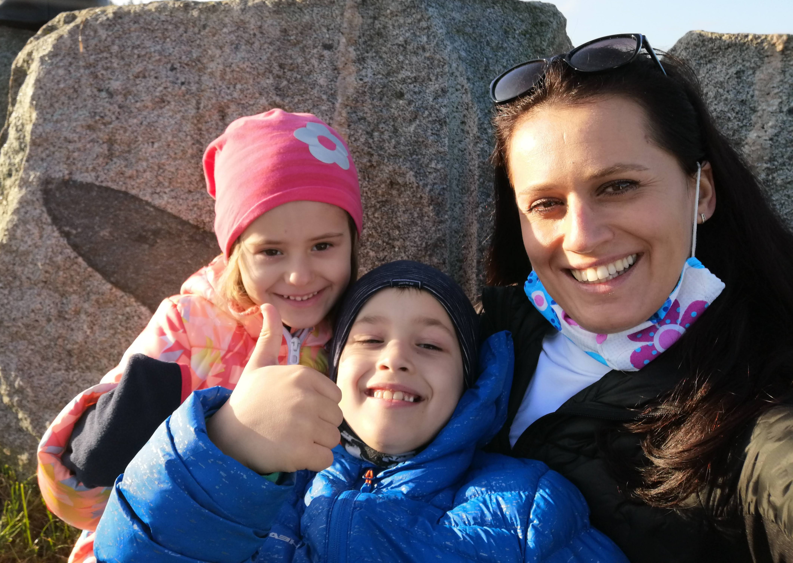

Verča Sípalová
Jmenuji se Verča, jsem z Českých Budějovic. Doma mám dvě nezbedné děti Adélku, 5 let a Honzíka, 8 let. V předchozích letech jsem vystřídala pár zaměstnání, spíše administrativních. Ráda bych do budoucna změnu, dělat trochu dynamičtější práci a hlavně si myslím, že v oblasti webdesignu budu mít větší možnost určit si přesně čas, kdy se mohu věnovat práci a kdy dětem.
Do digitální akademie jsem se přihlásila ze zvědavosti, a s vidinou rozšíření vědomostí a obzorů a mít příležitost do budoucnaucházet se o novou práci. Za svoji parťačku jsem si vybrala Slávku a po společném setkání a povídáním o nás, jsme se rozhodly pro Appku HYPOŠKU.

Po absolvování Ekonomické fakulty Jihočeské Univerzity jsem pracovala v E.ONu na pozici Account Managera. Soukormě jsem si k tomu založila e-shop se svatebními doplňky a pomáhala s koordinací svateb. K tvorbě e-shopu jsem musela využít pomoci kamaráda a pak si správu webu dělala sama. Tady vznikla prvně myšlenka, že by bylo moc fajn toto umět a udělat si vlastní kreativní web. Pak přišla mateřská a skloubit dvě ratolesti, koordinaci svateb a správu eshopu už nebylo možné zvládat. Eshop a koordinace šly do ústraní. Po mateřské při návratu zpět do pracovního procesu jsem byla po roce působení v korporátu vyčerpaná a bez kreativity, stala se z práce rutina. Každý den to samé. I díky COVID době jsem se začala více zajímat, kde by bylo moožné se dál vzdělávat a rozvíjet se a našla jsem na Facebooku upoutávku na Digitální akademii. Začala jsem ji sledovat a postupně i nabídku kurzů, co nabízí. Jsem ráda, že jsem se na Digitální akademii WEB přihlásila, podaří se mi ji úspěšně absolvovat a v budoucnu využít získané znalosti.
Digitální akademie WEB je opravdu intenzivní 3 měsíční kurz, neustále se učíme nové věci, procvičujeme znalosti, je to náročné i díky tomu, že je offline a doma vám k tomu běhají děti. Věřím však, že náš projekt bude skvělý a využijeme k tomu veškeré získané znalosti.